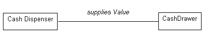
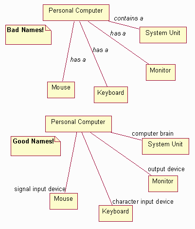
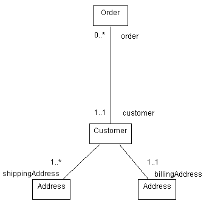
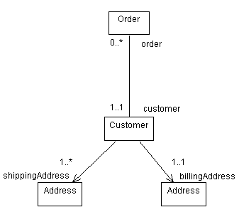
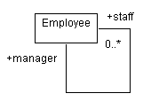
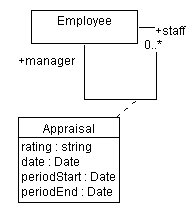
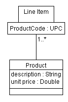

| Рекомендация: Ассоциация |
 |
|
| Связанные элементы |
|---|
АссоциацииАссоциации представляют структурные взаимосвязи между объектами различных классов; они представляют соединения между экземплярами двух или более классов, существующих в течение определенного времени. Сравните с временными ссылками, которые создаются только на время операции. В отличие от первых, вторые ситуации можно моделировать с помощью взаимодействий, в которых ссылки существуют только в конкретных ограниченных контекстах. С помощью ассоциаций вы можете указывать, что объектам известно о других объектах. Иногда объекты должны содержать ссылки друг на друга, чтобы иметь возможность взаимодействовать, например отправлять сообщения друг другу; таким образом, в некоторых случаях ассоциации могут следовать из шаблонов взаимодействия на диаграммах последовательности или диаграммах связи. Имена ассоциацийБольшинство ассоциаций бинарные (соединяют в точности два класса) и изображаются сплошными линиями, соединяющими пары символов классов. Имя может быть присвоено ассоциации или ее роли. Имена ролей предпочтительнее, поскольку передают больше информации. В случае, когда имя можно присвоить только одной из ролей, роли все равно предпочтительнее имен ассоциаций, при условии что ассоциация остается однонаправленной, начинающейся от объекта, с которым связано имя роли. Имена ассоциациям чаще всего присваиваются во время анализа, пока информации, позволяющей правильно назвать роли, недостаточно. Имена ассоциаций должны отражать цель взаимосвязи и быть глагольными словосочетаниями. Имя ассоциации помещается непосредственно на пути ассоциации или рядом с ним. Пример В банкомате Лоток извлекает деньги, а Раздатчик выдает их. Для того чтобы Раздатчик мог выдавать деньги, у него должна быть связь с объектом Лоток; аналогично, если деньги в Лотке кончаются, об этом необходимо уведомить Раздатчик, поэтому у Лотка также должна быть связь с Раздатчиком. Эту связь моделирует ассоциация.  Ассоциация между Раздатчиком и Лотком с именем предоставляет Значение. Неправильно выбранные имена ассоциаций могут вызывать путаницу и затруднять работу. В следующем примере иллюстрируются удачно и неудачно выбранные имена. На первой диаграмме заданы имена ассоциаций, и хотя они синтаксически правильны (имеют глагольную форму), они мало говорят о самой взаимосвязи. На второй диаграмме заданы имена ролей, и они сообщают гораздо больше о природе участия в ассоциации.  Примеры удачно и неудачно выбранных имен ассоциаций и ролей РолиКаждый конец ассоциации - это роль, которую класс играет в ассоциации. У каждой роли должно быть имя. Имена ролей напротив класса должны быть уникальными. Имя роли должно быть существительным, указывающим роль связанного объекта по отношению к связывающему объекту. Например, для объекта Преподаватель в ассоциации с Разделом курсов подходящим будет имя роли лектор; избегайте имен типа "имеет" и "содержит", поскольку они не сообщают никакой новой информации о природе взаимосвязей между классами. Учтите, что имена ассоциаций и имена ролей взаимоисключающи: нельзя указывать имя ассоциации и имя роли. Имена ролей предпочтительнее имен ассоциаций, за исключением случаев, когда для правильного выбора имени роли недостаточно информации (как это часто бывает в анализе; на этапе проектирования всегда следует применять имена ролей). Неудачно выбранное имя роли может послужить причиной неполной или неправильно сформированной модели. Имя роли помещается рядом с концом линии ассоциации. Пример Рассмотрим взаимосвязи между классами в системе заказов. У клиента может быть два различных типа адресов: адреса, на которые отправляют счета для оплаты, и адреса, на которые отправляют заказы. В результате получаются две ассоциации между клиентом и адресом, как показано ниже. Ассоциации помечены ролью, которую связанный адрес играет для клиента.  Ассоциации между Клиентом, Адресом и Заказом, показывающие имена ролей и множественности МножественностьДля каждой роли можно указать множественность ее класса, т.е. число объектов класса, которые могут быть связаны с одним объектом другого класса. Множественность задается текстовым выражением в роли. Выражение - это список перечисленных через запятую диапазонов целых чисел. Диапазон задается целым числом (нижним значением), двумя точками и другим целым числом (верхним значением); отдельное целое число задает допустимый диапазон, а символ '*' означает "много", т.е. неограниченное число объектов. Отдельный символ '*' эквивалентен диапазону '0..*', т.е. произвольному неотрицательному целому числу; это значение по умолчанию. Множественность необязательной скалярной роли равна 0..1. Пример В предыдущем примере множественности были показаны для ассоциаций между Заказом и Клиентом и между Клиентом и Адресом. Диаграмма говорит, что с Заказом должен быть связан Клиент (множественность 1..1 на конце Клиента), но у Клиента может не быть Заказов (множественность 0..* на конце Заказа). Далее, у Клиента только один расчетный адрес, но один или несколько адресов поставки. Для сокращения записи, при отсутствии множественности считается, что она равна 1..1. ИнициативаСвойство Инициатива роли указывает на возможность перехода от связанного класса к целевому классу с помощью ассоциации. Эта возможность может быть реализована по-разному: посредством прямых ссылок на объекты, связанных массивов, хэш-таблиц или любой другой технологии реализации, позволяющей одному объекту обращаться к другому. Инициатива обозначается открытой стрелкой, помещенной на целевой конец линии ассоциации рядом с целевым классом (к которому возможно перемещение). По умолчанию свойство Инициатива равно true. Пример В примере с заказами по ассоциации между Заказом и Клиентом можно перемещаться в обоих направлениях: Заказ должен знать, какой Клиент отправил Заказ, а Клиент - сколько Заказов он отправил. Если стрелки не показаны, то по ассоциации можно перемещаться в обоих направлениях. В случае ассоциаций между Клиентом и Адресом, Клиент должен знать свои Адреса, но Адреса не знают, какие Клиенты (или другие классы, поскольку адреса есть у многих объектов) связаны с адресом. В результате, свойство Инициатива на конце Клиент ассоциации выключено, что показано на следующей диаграмме:  Обновленные классы системы заказов со свойством Инициатива в ассоциациях Циклические ассоциацииИногда у класса есть ассоциация с самим собой. Это совсем не означает, что экземпляр класса содержит ассоциацию с самим собой; чаще это означает, что один из экземпляров класса содержит ассоциации с другими экземплярами того же класса. В случае циклических ассоциаций имена ролей существенны для различения цели ассоциации. Пример Рассмотрим следующую циклическую ассоциацию с участием класса Сотрудник:  В этом случае, у сотрудника может быть ассоциация с другими сотрудниками; если так, он является руководителем, а другие сотрудники - персоналом. По ассоциации можно перемещаться в обоих направлениях, поскольку сотрудники должны знать своего руководителя, а руководитель - своих сотрудников. Множественные ассоциацииНаличие двух ассоциаций между классами означает, что объекты связаны дважды; заданный объект может быть связан с другими объектами через каждую ассоциацию. Каждая ассоциация независима и достигается по имени роли. Как показано выше, у клиента могут быть ассоциации с различными экземплярами одного и того же класса, каждый с своим именем роли. Упорядочивание ролейКогда множественность ассоциации больше единицы, связанные экземпляры можно упорядочить. Свойство Упорядоченность роли указывает, что экземпляры, участвующие в ассоциации, упорядочены; по умолчанию они образуют неупорядоченный набор. Модель не указывает, как именно обеспечивается упорядоченность; операции, обновляющие упорядоченную ассоциацию, должны указывать место вставки обновленных элементов. СсылкиОтдельные экземпляры ассоциации называются ссылками; таким образом, ссылка - это взаимосвязь между экземплярами. По ссылкам можно отправлять сообщения, и ссылки могут обозначать связи и агрегирования между объектами. Дополнительная информация приведена в разделе Технология: диаграмма связи. Классы ассоциацийКласс ассоциации - это ассоциация со свойствами класса (например, атрибутами, операциями и ассоциациями). Она обозначена пунктирной линией, ведущей от пути ассоциации к символу класса, содержащему атрибуты, операции и ассоциации для данной ассоциации. Атрибуты, операции и ассоциации применимы к самой ассоциации. Каждая ссылка в ассоциации обладает указанными свойствами. Чаще всего классы ассоциаций применяются для согласования взаимосвязей многие-ко-многим (см. пример ниже). В принципе, имена ассоциации и класса должны совпадать, но допускаются и разные имена, если это необходимо. Вырожденный класс ассоциации содержит лишь атрибуты ассоциации; в этом случае вы можете опустить имя класса ассоциации, чтобы деакцентировать его самостоятельность. Пример Продолжая ранее рассмотренный пример Сотрудник, рассмотрим случай, когда Сотрудник (подчиненный) работает на другого Сотрудника (руководителя). Руководитель периодически оценивает эффективность работы подчиненного, определяя его производительность за некоторый период. Оценка не может быть атрибутом ни руководителя, ни подчиненного по отдельности, но мы можем связать информацию с самой ассоциацией, как показано ниже:  Класс ассоциации Оценка собирает информацию, относящуюся к самой ассоциации Уточненные ассоциацииСпецификаторы позволяют еще более ограничить и определить набор экземпляров, связанных с другим экземпляром; объект и значение спецификатора задают уникальный набор объектов в ассоциации, образуя составной ключ. Уточнение обычно сокращает множественность противоположной роли; чистая множественность указывает число экземпляров связанного класса, связанных с первым классом и заданным значением спецификатора. Спецификаторы изображаются в виде небольших прямоугольников на конце ассоциации, подсоединенных к уточняющему классу. Они являются частью ассоциации, а не класса. Поле спецификатора может содержать несколько значений; уточнение производится на основе всего списка значений спецификатора. Уточненная ассоциация является разновидностью атрибута ассоциации. Пример Рассмотрим следующее уточнение ассоциации между Товаром и Продуктом: у Товара есть ассоциация с заказанным Продуктом. Каждый товар связан с одним и только одним продуктом, в то время как продукт может быть заказан во многих товарах. Уточняя ассоциацию спецификатором Код продукта, мы дополнительно указываем, что каждый продукт снабжен уникальным кодом продукта и что Товары связаны с Продуктами через этот код продукта.  Ассоциация между Товаром и Продуктом содержит спецификатор Код продукта. N-арные ассоциацииN-арная ассоциация - это ассоциация между тремя или более классами, в которой класс может встречаться несколько раз. N-арные ассоциации изображаются в виде больших ромбов, в котором к каждому участвующему классу ведет свой путь ассоциации. Этот традиционный символ модели сущностей и взаимосвязей для ассоциации. Бинарные формы изображаются без ромбика для компактности, поскольку на них приходится основная часть ассоциаций в реальной модели. N-арные ассоциации встречаются редко и могут также моделироваться путем преобразования их в классы. У n-арных ассоциаций также может быть класс ассоциации; это изображается пунктирной линией, ведущей от ромбика к символу класса. У ролей могут быть имена ролей, но множественность является более сложной и лучше всего задается путем перечисления возможных ключей. Если она задана, множественность представляет число экземпляров, соответствующих заданному кортежу из остальных n-1 объектов. Большинство применяемых n-арных ассоциаций можно исключить с помощью уточненных ассоциаций или классов ассоциаций. Их также можно заменить обычными классами, хотя при этом теряется ограничение, согласно которому у заданного кортежа участвующих объектов может быть только одна ссылка. |
© Copyright IBM Corp. 1987, 2006. Все права защищены.. |